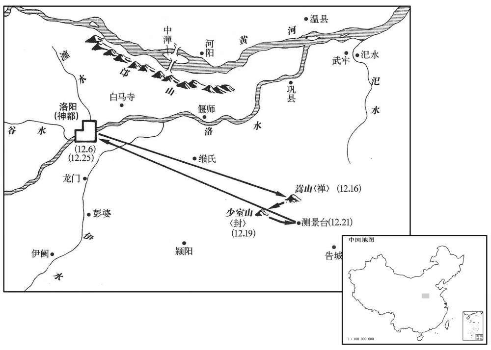
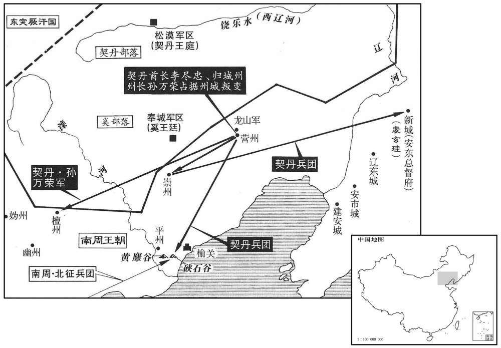

公元696年资治通鉴：本年记事、原文与白话对照
按原书编年位置阅读；追叙和史论不等于本年发生的事件。白话采用所据译本，缺译不以生成译文补齐。
卷205 · 本年记事
公元696年 · 唐则天顺圣皇后万岁通天元年
万岁通天元年〔（丙申、六九六）是年九月始改元。〕
本年事件索引（现代整理）
- 武则天赴嵩山封禅，改元万岁登封
- 安平王武攸绪隐居嵩山，辞官不仕
- 娄师德任肃边道行军副总管
- 长安崇尊庙改为太庙
- 神岳天中王改封神岳天中黄帝
- 王孝杰、娄师德在素罗汗山败于吐蕃
- 新明堂落成，改称通天宫并改元
- 姚暃劝武则天拒绝大食进献狮子
- 孙元亨同任平章事
- 契丹李尽忠、孙万荣起兵攻陷营州
- 李尽忠自称无上可汗，率军围攻檀州
- 唐军在硖石谷中伏大败，后续诸军亦覆没
- 武则天下令征募囚犯及有勇力的家奴讨伐契丹
- 陈子昂反对征用罪犯和家奴充兵讨契丹
- 突厥攻凉州并俘虏都督许钦明
- 许钦寂拒绝劝降安东属城，被契丹杀害
- 吐蕃请求和亲并要求撤出安西四镇
- 郭元振建议以归还吐谷浑等条件应对吐蕃
- 郭元振建议利用和亲使者离间吐蕃君臣
- 王方庆、李道广同任平章事
- 默啜请与武则天结亲并请求归还河西降户
- 李尽忠去世，默啜掠走契丹首领家属
- 孙万荣复振后攻陷冀州、瀛州，狄仁杰安民守魏州
- 姚元崇处置契丹军书有条理，升任夏官侍郎
- 武则天恢复徐有功官职，时人称赞其持法平允

本年形势与背景参考图

本年形势与背景参考图
腊月，甲戍，太后发神都；甲申，封神岳；〔后以嵩山为神岳。考异曰：统纪作壬午，实录作甲申。按去岁下制云：「腊月十六日有事于神岳。」长历：是月甲戍朔，壬午九日，甲申十一日，皆非十六日。今从实录。〕赦天下，改元万岁登封，天下百姓无出今年租税；大酺九日。〔酺，音蒲。〕丁亥，禅于少室；〔戴延之曰：嵩山三十六峰，东曰太室，西曰少室，相去十七里，嵩其总名也。谓之室，以其下各有石室焉。少室高八百六十丈，方十里，与太室相埒，但小耳。〕己丑，御朝觐坛受贺；〔朝，直遥翻。〕癸巳，还宫；甲午，谒太庙。
腊月，甲戌（初一），太后从神都出发；甲申（十一日），祭天于神岳嵩山，大赦天下，更改年号为万岁登封，让天下百姓免交今年租税；全国会饮九天。丁亥（十四日），祭地于嵩山少室峰；己丑（十六日），登上朝觐坛接受朝贺；癸巳（二十日），回宫；甲午（二十一日），禀告太庙。
右千牛卫将军安平王武攸绪，少有志行，恬澹寡欲，扈从封中岳还，〔少，诗照翻。行，下孟翻。从，才用翻。〕即求弃官，隐于嵩山之阳。太后疑其诈，许之，以观其所为。攸绪遂优游岩壑，冬居茅椒，〔茅椒编之为室，性暖，可以御寒。〕夏居石室，一如山林之士。太后所赐及王公所遗野服器玩，〔遗，士季翻。〕攸绪一皆置之不用，尘埃凝积。买田使奴耕种，与民无异。〔考异曰：旧传云：「圣历中，弃官隐嵩山。」今从实录。〕
右千牛卫将军安平王武攸绪，少年时就有志向品行，淡泊不贪图名利，随从太后封中岳回来后，即要求抛弃官爵，隐居于嵩山南麓。太后怀疑他有诈，同意他的请求，以观察他的行动。武攸绪于是悠然自得于山水之间，冬天居住在茅椒作墙的屋子里，夏天居住于石室，和山林隐士一样。太后的赏赐，王公赠给的衣服玩物，武攸绪一概闲置不用，上面积满灰尘尘。他买田让家奴耕种，和普通百姓没有区别。
春，一月，甲寅，以娄师德为肃边道行军副总管，击吐蕃。己巳，以师德为左肃政大夫知政事如故。〔考异曰：实录云：「己巳，秋官尚书娄师德为肃政御史大夫，知政事如故。」旧传云：「万岁登封元年转左肃政御史大夫，仍依旧知政事。证圣元年吐蕃寇洮州，今师德与夏官尚书王孝杰讨之。」按证圣年号在登封前，此传尤为谬误。新传云：「师德为何源、积石、怀远军及河、兰、鄯、廓州检校营田大使，入迁秋官尚书，改左肃政御史大夫并知政事，证圣中与王孝杰拒吐蕃于洮州。」今据实录，延载元年一月，自宰相出为营田大使。新书宰相表，「长寿二年师德平章事，延载元年出为营田大使，万岁通天元年一月甲寅，师德为左肃政御史大夫、肃边道行军总管。」统纪云：「秋官尚书、知政事娄师德充副总管，讨吐蕃。」盖师德之出为营田大使，不解宰相之职也。今从实录、新本纪。〕
春季，一月，甲寅（十一日），朝廷任命娄师德为肃边道行军副总管，进攻吐蕃。己巳（二十六日），任命娄师德为左肃政大夫，仍旧主持政事。
改长安崇尊庙为太庙。〔崇尊庙见上卷天授元年。〕
朝廷改长安崇尊庙为太庙。
二月，辛巳，尊神岳天中王为神岳天中黄帝，灵妃为天中黄后；启为齐圣皇帝；封启母神为玉京太后。〔夏后启母石在嵩山。〕
二月，辛巳（初九），朝廷尊神岳天中王为神岳天中黄帝，灵妃为天中黄后；夏启为齐圣皇帝；封启母神为玉京太后。
三月，壬寅，王孝杰、娄师德与吐蕃将论钦陵赞婆戢于素罗汗山，〔据娄师德传，素罗汗山在洮州界。将，即亮翻。〕唐兵大败；孝杰坐免为庶人，师德贬原州员外司马。〔考异曰：新纪，四月庚子贬师德，而无免孝杰日；新表，「三月壬寅孝杰免。」按实录三月壬寅抚州火下言孝杰等败，盖皆据奏到之日耳。二人同罪，贬必同时，不容隔月，不知果在何日。今但依实录，因其军败，终言贬官之事而已。〕师德因署移牒，惊曰：「官爵尽无邪！」既而曰：「亦善，亦善。」不得介意。「复，扶又翻。」
三月，壬寅（初一），王孝杰、娄师德与吐蕃论钦陵赞婆交战于素罗汗山，唐军大败；王孝杰因此被免官为平民，娄师德被降职为原州员外司马。一次，娄师德在签署官府文书时，吃惊地说：“官爵全都没有了！”接着又说：“也好，也好。”不再把这事情放在心上。
丁巳，新明堂成，高二百九十四尺，方三百尺，规模率小于旧。上施金涂铁凤，高二丈，〔高，古犒翻。〕后为大风所损；更为铜火珠，群龙捧之，〔更，工衡翻。〕号曰通天宫。赦天下，改天万岁通天。
丁巳（十六日），新明堂落成，高二百九十四尺，纵横三百尺，规模大致小于被焚烧的明堂。上面放置涂金铁凤，高二丈，后来被大风损坏；另造铜火珠，由群龙捧着，定名为通天宫。朝廷大赦天下罪人，改年号为万岁通天。
大食请献师子。姚暃上疏，以为：「师子专食肉，远道传致，〔传，知恋翻。〕肉既难得，极为劳费。陛下鹰犬不蓄，渔猎悉停，岂容菲薄于身而厚给于兽！」乃却之。
大食国请求给朝廷进献狮子，姚上疏认为：“狮子专门吃肉，远道运来，肉既难得，极费人力财力。陛下鹰犬都不畜养，渔猎全部停止，哪能容许对自己菲薄而对野兽优厚！”于是拒绝接受。
以检校夏官侍郎孙元亨同平章事。
朝廷任命检校夏官侍郎孙元亨为同平章事。
夏，五月，壬子，营州契丹松漠都督李尽忠、归诚州刺史孙万荣举兵反，政陷营州，〔开元十道志曰：舜筑柳城，即虞已前柳城之地，因有营州之称。郡国志云：当营室分，故曰营州。后汉末，辽西乌丸蹋顿所居。后魏于平州界置辽西郡，周平齐，犹为高宝宁所据，隋讨平宝宁，始置营州。松漠都督府及归诚州，太宗以内属契丹部落置。〕杀都督赵文翙。〔契，欺讫翻，又音吃。翙，呼会翻。〕尽忠，万荣之妹夫也，皆居于营州城侧。文翙刚愎，契丹饥不加赈给，视酋长如奴仆，故二人怨而反。〔愎，弼力翻。赈，津忍翻。酋，慈由翻。长，知两翻。〕乙丑，遣左鹰扬卫将军曹仁师、右金吾卫大将军张玄遇、左威卫大将军李多祚、司农少卿麻仁节等二十八将讨之。〔八将，即亮翻。〕秋，七月，辛亥，以春官尚书梁王武三思为榆关道安抚大使，〔榆关在胜州扴，与突厥接，非所以备契丹也。营州城西四百八十里，有榆关守捉城，所谓「临渝之险」也。「榆」当作「渝」，史于此以后多以「渝」作「榆」，读者宜详考。使，疏吏翻。〕姚暃副之，以备契丹。改李尽忠为李尽灭，孙万荣为孙万斩。〔武后改突厥骨咄禄为不卒禄，又改李尽忠为李尽灭，孙万荣为孙万斩。此事何异王莽所为，顾有成败之异耳。〕
夏季，五月，壬子（十二日），营州契丹松漠都督李尽忠、归诚州刺史孙万荣起兵反唐，攻陷营州，杀都督赵文。李尽忠是孙万荣的妹夫，都居住在营州城边。赵文傲慢而固执，契丹发生饥荒，他不赈济，看待他们的首领如同奴仆，所以他们二人怨恨而造反。乙丑（二十五日），唐朝派遣左鹰扬卫将军曹仁师、右金吾卫大将军张玄遇、左威卫大将军李多祚、司农少卿麻仁节等二十八将讨伐他们。秋季，七月，辛亥（十一日），朝廷任命春官尚书梁王武三思为榆关道安抚大使，姚作他的副职，以防备契丹；改李尽忠为李尽灭，孙万荣为孙万斩。
尽忠寻自称无上可汗，据营州，〔可，从刊入声。汗，音寒。〕以万荣为前锋，略地，所向皆下，旬日，兵至数万，进围檀州，〔檀州本汉渔郡傂奚县地，旧置安州，后周改为玄州，隋开皇十六年置檀州。〕清边前军副总管张九节击却之。
李尽忠不久自称无上可汗，占据营州，以孙万荣为前锋，夺取地盘，所向无敌，十日间拥兵至数万，进兵包围檀州，被清边前军副总管张九节击退。 八月，丁酉，曹仁师、张玄遇、麻仁节与契丹战于硖石谷，唐兵大败。先是，契丹破营州，获唐俘数百，囚之地牢，闻唐兵将至，使守牢绐之曰：“吾辈家属，饥寒不能自存，唯俟官军至即降耳。”既而契丹引出其俘，饲以糠粥，慰劳之曰：“吾养汝则无食，杀汝又不忍，今纵汝去。”遂释之。俘至幽州，具言其状，诸军闻之，争欲先入。至黄獐谷，虏又遣老弱迎降，故遗老牛瘦马于道侧。仁师等三军弃步卒，将骑兵先进。契丹设伏横击之，飞索以玄遇、仁节，生获之，将卒死者填山谷，鲜有脱者。契丹得军印，诈为牒，令玄遇等署之，牒总管燕匪石、宗怀昌等云：“官军已破贼，若至营州，军将皆斩，兵不叙勋。”匪石等得牒，昼夜兼行，不遑寝食以赴之，士马疲弊；契丹伏兵于中道邀之，全军皆没。
八月，丁酉，曹仁师、张玄遇、麻仁节与契丹战于硖石谷，〔平州有西硖石、东硖石二戍。〕唐兵大败。先是，契丹破营州，〔先，悉应翻。〕获唐俘数百，囚之地牢，闻唐兵将至，使守牢霫绐之曰：〔使霫守唐俘于地牢，故曰守牢霫。霫，而立翻。绐，荡亥翻。〕「吾辈家属，饥寒不能自存，唯俟官军至即降耳。」〔降，户江翻；下同。〕既而契丹引出其俘，饲以糠粥，慰劳之曰：〔饲，祥吏翻。劳，力到翻。〕「吾养汝则无食，杀汝又不忍，今纵汝去。」遂释之。俘至幽州，具言其状，诸军闻之，争欲先入。至黄谷，〔据旧书，黄谷在西硖石。〕虏又遣老弱迎降，故遗老牛瘦马于道侧。仁师等三军弃步卒，将骑兵先进。契丹设伏横击之，飞索以亁玄遇、仁节，生获之，〔将，即亮翻。骑，奇寄翻。索，昔各翻。字书无「亁」字，今读与搨同，德盍翻，或曰吐合翻。〕将卒死者填山谷，鲜有脱者。〔鲜，息浅翻。〕契丹得军印，诈为牒，令玄遇等署之，牒总管燕匪石、宗怀昌等云：「官军已破贼，若至营州，军将皆斩，兵不叙勋。」〔燕，因肩翻。将，即亮翻。〕匪石等得牒，昼夜兼行，不遑寝食以赴之，士马疲弊；契丹伏兵于中道邀之，全军皆没。
本段缺少可靠对应白话，原文完整保留；未使用生成译文。
九月，制：「天下系囚及庶士家奴骁勇者，官偿其直，发以击契丹。」〔骁，坚尧翻〕初令山东近边诸州置武骑团兵，以同州刺史建安王武攸宜为右武威卫大将军，充清边道行军大总管，以讨契丹。
九月，太后下令：“天下囚犯及官民家奴有勇力的，官府给钱赎出，发往前线进攻契丹。”朝廷开始命令崤山以东靠近边地各州设置武骑团兵，任命同州刺史建安王武攸宜为右武威卫大将军，充任清边道行军大总管，以讨伐契丹。
右拾遗陈子昂为攸宜府参谋，〔以本官参谋军事，不列为品秩。〕上疏曰：「恩制免天下罪人及募诸色奴充兵讨击契丹，此乃捷急之计，非天子之兵。且比来刑狱久清，罪人全少，〔比，毗至翻。少，诗沼翻。〕奴多怯弱，不惯征行，〔惯，古患翻。〕纵其募集，未足可用。况今天下忠臣义士，万分未用其一，契丹小呩，〔呩，鱼列翻。〕假命待诛，何劳免罪赎奴，损国大体！臣恐此策不可威示天下。」
右拾遗陈子昂任武攸宜军府参谋，上疏说：“太后下令赦免天下罪人及招募官民家奴当兵讨伐契丹，这只是应急的办法，不是天子的兵员。况且近来刑狱早已公平，罪人减少，家奴多数懦弱，不习惯行军打仗，纵使能募集到，也不见得可用。何况当今天下的忠臣义士，还没有用上万分之一，契丹小小的祸乱，发个命令就将诛灭，用不着赦免罪犯和赎出家奴，有损国家的体面！我恐怕这种政策不足以向天下显示国家威力。”
丁巳，突厥寇凉州，执都督许钦明。〔考异曰：实录云：「吐蕃寇凉州，都督许钦明为贼所杀。」按明年正月默啜寇灵州，以钦明自随；又默啜将龚孙万荣，杀钦明以祭天。实录云吐蕃，误也。〕钦明，绍之曾孙也；〔许绍预凌烟阁二十四功臣之列。〕时出按部，突厥数万奄至城下，钦明拒战，为所虏。
丁巳（十八日），突厥侵扰凉州，虏走州都督许钦明。许钦明是许绍的曾孙；当时他正外出巡查所辖地区，突厥兵数万人突然进攻到城下，许钦明抵抗，被俘虏。
钦明兄钦寂，时为龙山军讨击副使，与契丹战于崇州，〔龙山，即慕容氏和龙之山也。崇州，奚州也，武德五年，分饶乐都督府之可汗部置，贞观三年，徙治营州之废阳师镇。〕军败，被擒。虏将围安东，令钦寂说其属城未下者。〔说，输芮翻。〕安东都护裴玄珪在城中，〔高宗总章元年置安东都护府于平壤城，上元元年，徙辽东郡故城，仪凤二年又徙新城，开元二年徙平州，天宝二年徙辽西故郡城，疑此时已徙平州。宋白曰：营州东南二百七十里有保定军，旧安东都护府。〕钦寂谓曰：「狂贼天殃灭在朝夕，公但励兵谨守以全忠节。」虏杀之。
许钦明的哥哥许钦寂，当时任龙山军讨击副使，与契丹在崇州交战，兵败被擒。契丹人将包围安东，命令许钦寂劝说其属下未被攻下的城邑投降。安东都护裴玄正在城中，许钦寂对他说：“狂贼为天所罚，灭亡就在朝夕之间，您只管勉励士兵严密防守以保全忠诚和气节。”契丹人因此把他杀了。
吐蕃复遣使请和亲，〔复，扶又翻。〕太后遣右武卫冑曹参军贵乡郭元振往察其宜。〔冑曹参军掌兵械、公廨兴善、罚㻙，大朝会行从，则受黄质甲铠弓矢于卫尉。〕吐蕃将论钦陵请罢安西四镇戍兵，并求分十姓突厥之地。〔长寿元年置四镇戍兵。十姓突厥，五咄陆、五弩失毕也。〕元振曰：「四镇、十姓与吐蕃种类本殊，〔种，章勇翻。〕今请罢唐兵，岂非有兼并之志乎﹖」钦陵曰：「吐蕃苟贪土地，欲为边患，则东侵甘、凉，岂肯规利于万里之外邪！」乃遣使者随元振入请之。
吐蕃又派遣使者请求与唐和好，太后派遣右武卫胄曹参军贵乡人郭元振前去观察情况。吐蕃将领论钦陵请求唐朝撤去安西四镇的守军，并请求分给他们十姓突厥的土地。郭元振说：“四镇、十姓突厥与吐蕃本是不同民族，现在请撤唐朝守军，难道不是有兼并的打算吗？”论钦陵说：“吐蕃假如贪求土地，想成为唐朝边地的祸患，则东侵甘州、凉州，哪里肯谋利于万里之外呢！”于是派遣使者随郭元振入唐朝提出上述请求。
朝廷疑未决，元振上疏，〔使，疏吏翻。朝，直遥翻。上，时掌翻。〕以为：「钦陵求罢兵割地，此乃利害之机，诚不可轻举措也。今若直拒其善意，则为边患必深。四镇之利远，甘、凉之害近，不可不深图也。宜以计缓之，使其和望未绝则善矣。彼四镇、十姓，吐蕃之所甚欲也，而青海、吐谷浑，亦国家之要地也，〔吐，从暾入声。谷，音浴。〕今报之宜曰：『四镇、十姓之地，本无用于中国，所以遣兵戍之，欲以镇抚西域，分吐蕃之势，使不得并力东侵也。今若果无东侵之志，堂归我吐谷浑诸部及青海故地，〔吐谷浑地没吐蕃，见二百二卷高宗咸亨三年，薛仁贵败于大非川，青海亦没。〕则五俟斤部亦当以归吐蕃。』〔西突厥五弩失毕部，各有酋长，曰五俟斤。俟，渠之翻。〕如此则以塞钦陵之口，〔塞，悉则翻。〕而亦未与之绝也。若钦陵小有乖违，则曲在彼矣。且四镇、十姓款附日久，今未察其情之向背，事之利害，〔背，蒲妹翻。〕遥割而弃之，恐伤诸国之心，非所以御四夷也。」太后从之。〔考异曰：御史台记：「论钦陵必欲得四镇及益州通市乃和亲，朝廷不许。制书至河源，纳言娄师德患之，曰：『制书到，彼必入寇，奈何！』监察御史南阳张彦先时按河源、积石诸军，谓师德曰：『但稽制书，虏必狐疑，吾乃先为之备，虏至必不捷矣。』师德从之。钦陵入寇，果无功，由是得罪于其国。」按师德延载元年一月日同平章事，充河源、积石、怀远等军营田大使，万岁通天元年一月为肃边道行军总管，兴王孝杰同击吐蕃，败于素罗汗山，寻贬原州司马。是岁吐蕃复求和，钦陵请割四镇之地。神功元年正月，师德复同平章事，九月乃守纳言。御史台记误也。〕
是否答应他的要求，朝廷拿不定主意，郭元振上疏认为：“论钦陵要求罢兵割地，这是利害的关键，确实不应轻易作出决定。现在如果直截了当地拒绝他的善意，结果将招致很深的边患。四镇的利益远，甘州、凉州的受害近，不可不深入考虑。应当用计策拖延时间，使他和好的希望未断绝就好了。那四镇、十姓，吐蕃是很想得到的，而青海、吐谷浑，也是我们的要地。现在回答他应该说：‘四镇、十姓之地，本来对唐朝没有什么用处，所以派兵戍守，是想安定抚慰西域，分散吐蕃的军力，使吐蕃不能全力东侵。现在如果吐蕃无东侵的打算，就应当归还我吐谷浑各部及青海故地，而西突厥五俟斤部也应当归还吐蕃’。这样便足以堵住论钦陵的嘴，而且也未与他断绝关系。如果论钦陵略有违背，则是他没有道理。而且四镇、十姓诚恳归附已久，现在还未发现他们有反叛的情况，做有害于我们的事情，因为遥远而抛弃他们，恐怕要使各国伤心，不是控制四夷的良策。”太后听从他的意见。
元振又上言：「吐蕃百姓疲于傜戍，早愿和亲；钦陵利于统兵专制，独不欲归款。若国家岁发和亲使，〔上，时掌翻。使，疏吏翻。〕而钦陵常不从命，则彼国之人怨钦陵日深，望国恩日甚，设欲大举其徒，固亦难矣。斯亦离间之渐，〔间，古苋翻。〕可使其上下猜阻，祸乱内兴矣。」太后深然之。元振名震，以字行。
郭元振又向太后进言：“吐蕃百姓为徭役和兵役所苦，早就愿意与我们和好；只有论钦陵图统兵专制的私利，不想归附。如果我们每年都派去表示和好的使者，而论钦陵常不从命，则吐蕃百姓对论钦陵的怨恨就会日益加深，盼望得到国家的恩惠就会日甚一日，他要想大规模发动他的百姓，肯定就困难了。这也是逐渐离间的办法，可以使他们上下猜疑，祸乱从内部产生。”太后深表赞同。郭元振名震，元振是他的字，人们习惯称呼他的字。
庚申，以并州长史王方庆为鸾台侍郎，与殿中监万年李道广并同平章事。
庚申（二十一日），朝廷任命并州长史王方庆为鸾台侍郎，与殿中监万年人李道广一并任同平章事。
突厥默啜请为太后子，并为其女子求昏，悉归河西降户，帅其部众为国讨契丹。〔井为，众为，并于伪翻。帅，读曰率。〕太后遣豹韬卫大将军阎知微、〔龙朔改左右屯卫为左右武威卫，光宅又改为左右豹韬卫。〕左卫郎将摄司宾卿田归道册授默啜左卫大将军、迁善可汗。知微，立德之孙；归道，仁会之子也。〔阎立德以巧思称。田仁会，良吏也。〕
突厥阿史那默啜请求作太后的儿子，并为他女儿向唐朝求婚，全部归还河西降户，率领他的部众为唐朝讨伐契丹。太后派遣豹韬卫大将军阎知微、左卫郎将代理司宾卿田归道带着册书任命阿史那默啜为左卫大将军、迁善可汗。阎知微是阎立德的孙子；田归道是田仁会的儿子。
冬，十月，辛卯，契丹李尽忠卒，孙万荣代领其众。突厥默啜乘间龚松漠，虏尽忠、万荣妻子而去。〔卒，子恤翻。间，古苋翻。〕太后进拜默啜为颉跌利施大单于、立功报国可汗。〔颉，户结翻。跌，徒结翻。单，音蝉。〕
冬季，十月，辛卯（二十二日），契丹李尽忠去世，孙万荣替代他率领部众。突厥阿史那默啜乘机袭击松漠，俘虏李尽忠、孙万荣的妻子儿女后退走。太后晋升阿史那默嗓为颉跌利施大单于、立功报国可汗。
孙万荣收合余众，军势复振，〔复，扶又翻。〕遣别帅骆务整、何阿小为前锋，〔帅，所类翻。阿，乌葛翻。〕政陷冀州，杀刺史陆宝积，屠吏民数千人；又政瀛州，河北震动。制起彭泽令狄仁杰〔长寿元年，仁杰贬。〕为魏州刺史。前刺史独狐思庄畏契丹猝至，悉驱百姓入城，缮修守备。仁杰至，悉遣还农，曰：「贼犹在远，何烦如是！万一贼来，吾自当之。」百姓大悦。
孙万荣收集余众，军势再次兴盛，派遣别帅骆务整、何阿小为前锋，攻陷冀州，杀州刺史陆宝积，屠杀官吏和百姓数千人；又进攻瀛州，黄河以北地区震动。太后命令起用彭泽令狄仁杰为魏州刺史。前任刺史独孤思庄畏惧契丹突然到来，将百姓全部驱赶入城，修筑工事，加强守备。狄仁杰到任后，将百姓全部遣返务农，说：“敌人距离还远，用不着这样！万一敌人来，我自己抵挡他们。”百姓很高兴。
时契丹入寇，军书填委，夏官郎中硖石姚元崇剖析如流，皆有条理，〔后魏太和十一年于崤陵置崤县，属恒农郡；隋并入态耳县，属河南郡；唐武德元年复置，贞观十四年移治硖石坞，因更名硖石。〕太后奇之，擢为夏官侍郎。
当时契丹侵扰，军事文书堆集，夏官郎中硖石人姚元崇剖析决断，如水分流，都有条理，太后认为他不寻常，提升他为夏官侍郎。
太后思徐有功用法平，〔长寿二年，有功除名。〕擢拜左台殿中侍御史，闻〔【章：十二行本「闻」上有「远近」二字；乙十一行本同；孔本同；张校同。】〕者无不相贺。鹿城主簿宗城潘好礼，〔鹿城汉安定侯国，时县西七里故城是也。周、齐为安定县，隋改为鹿城县，唐属冀州。唐制，上县主簿正九品下，中下县从九品上，好呼到翻。〕着论，称有功蹈道依仁，固守诚节，不以贵贱死生易其操履。设客问曰：「徐公于今谁与为比﹖」主人曰：「四海至广，人物至多，或匿迹韬光，仆不敢诬，若所闻见，则一人而已，当于古人中求之。」客曰：「何如张释之﹖」主人曰：「释之所行者甚，易徐公所行者甚难，难易之间，优劣见矣。〔，易以鼓翻；下不易同。见，贤遍翻。〕张公逢汉文之时，天下无事，至如盗高庙玉环及渭桥惊马，守法而已，〔事见十四卷汉文帝三年。〕岂不易哉！徐公逢革命之秋，惟新之运，〔属，之欲翻。〕唐朝遗老，或包藏祸心，使人主有疑。〔朝，直遥翻。〕如周兴、来俊臣，乃尧年之四凶也，崇饰恶言以诬盛德；而徐公守死善道，深相明白，几陷囹圄，数挂纲维，〔【章：十二行本「纲维」作「网罗」；乙十一行本同，孔本同；熊校同。几，居希翻。囹，卢丁翻。圄，鱼巨翻。数，所角翻。〕此吾子所闻，岂不难哉！」〔考异曰：朝野俭载云：「时来俊臣罗织人罪，皆先进状，敕依，即奏籍没。徐有功出死囚，亦先进状，某人罪合免，敕好，然后断雪。有功好出罪，皆先奉进止，非是自专。」此盖时人见俊臣所诛，有功所雪，往往得其所欲，疑以为先进状耳。若有功一一先奉进止，何至三陷死刑乎！今不取。〕客曰：「使为司刑卿，乃得展其才矣。」主人曰：「吾子徒见徐公用法平允，谓可置司刑；仆其人，方寸之地，何所不容，若其用之，何事不可，岂直司刑而已哉！」
太后思念徐有功执法公平，重新提拔他为左台殿中侍御史，知道的人无不互相庆贺。鹿城主簿宗城人潘好礼撰写文章，称赞徐有功遵循正道、依从仁义，坚守真诚的气节，不因贵贱死生改变自己的操行。文章中假设客人提问：“当今谁可以和徐公相比？”主人说：“四海极广，人物极多，有的隐匿行迹，藏匿光采，我不敢乱下结论，但就我所闻所见，就他一人而已，能与他相比的只有从古人中寻求。”客人说：“比张释之如何？”主人说：“张释之所做的事情很容易，徐有功所做的事情很困难，难易之间优劣就可以显示出来了。张释之遇上汉文帝的时候，天下太平无事，至于像盗窃汉高祖庙中的玉环和汉文帝在渭桥的惊马事件，只不过按法律办理而已，难道不是很容易吗！徐有功遇上朝代变换的年代，适值万象更新的世道，唐朝的遗老，或包藏祸心，使君主有疑虑。如周兴、来俊臣，便是帝尧年代的四凶，大肆粉饰恶言以诬陷有德之人；而徐有功死守正道，深入审视清楚，几乎身陷监狱，多次触犯法度，这些都是您所听说过的，难道不是很难吗！”客人说：“假使任命他为司刑卿，就得以施展他的才能了。”主人说：“您只看到徐公用法平允，以为可任司刑卿；我观察他这个人，心里什么都有，如果得以发挥，什么事情都能胜任，何止司刑卿而已！”
译本中未与胡注本可靠对应的内容
以下另列供核对版本差异，不并入胡注本正文。
译本所附古文
八月，丁酉（二十八日），曹仁师、张玄遇、麻仁节与契丹交战于硖石谷，唐军大败。这以前，契丹攻下营州时，俘虏唐兵数百人，囚禁在地牢中。听说唐军将到，契丹人让一个守牢的族人欺骗他们说：“我们的家属受饥寒不能生存，只等官军到来便立即投降。”接着，契丹人又将他们领出地牢，让他们喝糠粥，慰劳他们说：“养着你们，则没有粮食，杀死你们，又不忍心，现在放你们走。”于是释放他们。他们回到幽州，叙说上述的情况，唐军听到后，都争着要赶紧进军。唐军到达黄獐谷，契丹人又派遣老弱兵民前来投降，故意在道边丢弃老牛瘦马。曹仁师等便留下步兵，领骑兵前进。契丹人设下埋伏从侧面攻击，用飞索将张玄遇与麻仁节绊倒，生擒他们。将卒死尸布满山谷，很少有人逃脱。契丹人获得唐军印信，便伪造文书让张玄遇等签名，通知总管燕匪石、
译本白话
宗怀昌等说：“官军已破贼，如果你们不到达营州，军官都斩首，兵卒不给勋级。”燕匪石等得到通知，便昼夜兼程，连吃饭睡觉都顾不上，一直往前赶，士卒马匹都疲劳得很；结果被契丹人在中途埋伏截击，全军覆没。